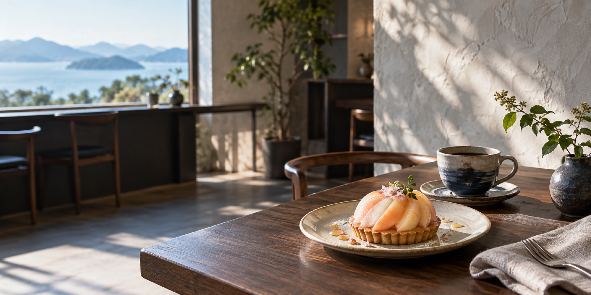

01
MORNING
焼きたてと珈琲で、
一日の輪郭を整える。
岡山県産小麦のトーストと、季節のジャム。窓際の光がやわらかな朝の席をご用意しています。
- おすすめ
- 季節のモーニングプレート
- 過ごし方
- ひとり時間・出勤前

メニューを並べるだけではなく、「誰と、いつ、どう過ごしたいか」から来店理由をつくる。
SCROLL TO FIND YOUR TIMEYOUR TIME AT HAREMA
時間帯や目的から、おすすめの席とメニューをご案内します。
MORNING
岡山県産小麦のトーストと、季節のジャム。窓際の光がやわらかな朝の席をご用意しています。
FROM OKAYAMA
「岡山産」を飾り言葉にせず、白桃、小麦、季節の野菜がどこから届き、どんな一皿になるのかを伝えます。
VISIT US